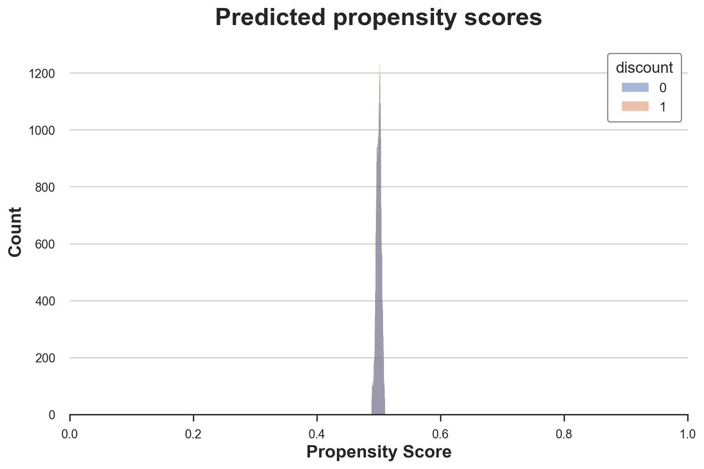

Understanding Causal Trees

How to use regression trees to estimate heterogeneous treatment effects.
In causal inference we are usually interested in estimating the causal effect of a treatment (a drug, ad, product, …) on an outcome of interest (a disease, firm revenue, customer satisfaction, …). However, knowing that a treatment works on average is often not sufficient and we would like to know for which subjects (patients, users, customers, …) it works better or worse, i.e. we would like to estimate heterogeneous treatment effects.
Estimating heterogeneous treatments effects allows us to do targeting. Knowing which customers are more likely to react to a discount allows a company to spend less money by offering fewer but better targeted discounts. This works also for negative effects: knowing for which patients a certain drug has side effects allows a pharmaceutical company to warn or exclude them from the treatment. There is also a more subtle advantage of estimating heterogeneous treatment effects: knowing for whom a treatment works allows us to better understand how a treatment works. Knowing that the effect of a discount does not depend on the income of its recipient but rather by its buying habits tells us that maybe it is not a matter of money, but rather a matter of attention or loyalty.
In this article, we will explore the estimation of heterogeneous treatment effects using a modified version of regression trees (and forests). From a machine learning perspective, there are two fundamental differences between causal trees and predictive trees. First of all, the target is the treatment effect, which is an inherently unobservable object. Second, we are interested in doing inference, which means quantifying the uncertainty of our estimates.
Online Discounts
For the rest of the article, we are going to use a toy example, for the sake of exposition: suppose we were an online shop and we are interested in understanding whether offering discounts to new customers increases their expenditure. In particular, we would like to know if offering discounts is more effective for some customers with respect to others, since we would prefer not to give discounts to customers that would spend anyways. Moreover, it could also be that spamming customers with pop-ups could deter them from buying, having the opposite effect.
To understand whether and how much the discounts are effective we run an A/B test: whenever a new user visits our online shop, we randomly decide whether to offer them the discount or not. I import the data-generating process dgp_online_discounts() from src.dgp. With respect to previous articles, I generated a new DGP parent class that handles randomization and data generation, while its children classes contain specific use cases. I also import some plotting functions and libraries from src.utils. To include not only code but also data and tables, I use Deepnote, a Jupyter-like web-based collaborative notebook environment.
%matplotlib inline
%config InlineBackend.figure_format = 'retina'
from src.utils import *
from src.dgp import dgp_online_discounts
dgp = dgp_online_discounts(n=100_000)
df = dgp.generate_data()
df.head()
| time | device | browser | region | discount | spend | |
|---|---|---|---|---|---|---|
| 0 | 10.78 | mobile | edge | 9 | 0 | 0.46 |
| 1 | 0.57 | desktop | firefox | 9 | 1 | 11.04 |
| 2 | 3.74 | mobile | safari | 7 | 0 | 1.81 |
| 3 | 13.37 | desktop | other | 5 | 0 | 31.90 |
| 4 | 0.71 | mobile | explorer | 2 | 0 | 15.42 |
We have data on 100.000 website visitors, for whom we observe the time of the day, the device they use, their browser and their geographical region. We also see whether they were offered the discount, our treatment, and what is their spend, the outcome of interest.
Since the treatment was randomly assigned, we can use a simple difference-in-means estimator to estimate the treatment effect. We expect the treatment and control group to be similar, except for the discount, therefore we can causally attribute any difference in spend to the discount.
smf.ols('spend ~ discount', df).fit().summary().tables[1]
| coef | std err | t | P>|t| | [0.025 | 0.975] | |
|---|---|---|---|---|---|---|
| Intercept | 5.0306 | 0.045 | 110.772 | 0.000 | 4.942 | 5.120 |
| discount | 1.9492 | 0.064 | 30.346 | 0.000 | 1.823 | 2.075 |
The discount seems to be effective: on average the spend in the treatment group increases by 3.86$. But are all customers equally affected?
To answer this question, we would like to estimate heterogeneous treatment effects, possibly at the individual level.
Conditional Average Treatment Effects
There are many possible ways to estimate heterogenous treatment effects. The most common is to split the population in groups based on some observable characteristic, which in our case could be the device, the browser or the geographical region. Once you have decided which variable to split your data on, you can simply interact the treatment variable (discount) with the dimension of treatment heterogeneity. Let’s take device for example.
smf.ols('spend ~ discount * device', df).fit().summary().tables[1]
| coef | std err | t | P>|t| | [0.025 | 0.975] | |
|---|---|---|---|---|---|---|
| Intercept | 5.0006 | 0.064 | 78.076 | 0.000 | 4.875 | 5.126 |
| device[T.mobile] | 0.0602 | 0.091 | 0.664 | 0.507 | -0.118 | 0.238 |
| discount | 1.2264 | 0.091 | 13.527 | 0.000 | 1.049 | 1.404 |
| discount:device[T.mobile] | 1.4447 | 0.128 | 11.261 | 0.000 | 1.193 | 1.696 |
How do we interpret the regression results? The effect of the discount on customers’ spend is $1.22$$ but it increases by a further $1.44$$ if the customer is accessing the website from a mobile device.
Splitting is easy for categorical variables, but for a continuous variable like time it is not intuitive where to split. Every hour? And which dimension is more informative? It would be temping to try all possible splits, but the more we split the data, the more it is likely that we find spurious results (i.e. we overfit, in machine learning lingo). It would be great if we could let the data speak and select the minimum and most informative splits.
In a separate post, I have shown how the so-called meta-learners take this approach to causal inference. The idea is to predict the outcome conditional on the treatment status for each observation, and then compare the predicted conditional on treatment, with the predicted outcome conditional on control. The difference is the individual treatment effect.
The problem with meta-learners is that they use all their degrees of freedom in predicting the outcome. However, we are interested to predict treatment effect heterogeneity. If most of the variation in the outcome is not in the treatment dimension, we will get very poor estimates of the treatment effects.
Is it possible to instead directly concentrate on the prediction of individual treatment effects? Let’s define $Y$ the outcome of interest, spend in our case, $D$ the treatment, the discount, and $X$ other observable characteristics. The ideal objective function is
$$ \sum_i \Big [ ( \tau_i - \hat \tau_i(X))^2 \Big ] $$
where $\tau_i$ is the treatment effect of individual $i$. However, this objective function is unfeasible since we do not observe $\tau_i$.
But, turns out that there is a way to get an unbiased estimate of the individual treatment effect. The idea is to use an auxiliary outcome variable, whose expected value for each individual is the individual treatment effect. This variable is
$$ Y_i^* = \frac{Y_i}{D_i \cdot p(X_i) - (1-D_i) \cdot (1-p(X_i))} $$
where $p(X_i)$ is the propensity score of observation $i$, i.e. its probability of being treated. A crucial assuption here is unconfoundedness, also known as ignorability or selection on observables. In short, we will assume that, conditional on some observables $X$ the treatment assignment is as good as random.
$$ \left\lbrace Y_i^{(0)}, Y_i^{(1)} \right \rbrace \ \perp \ D_i | X_i $$
where $Y_i^{(0)}$ and $Y_i^{(1)}$ denote the control and treated potential outcomes, respectively. In our case, we have randomized assignment, therefore we do not have to worry about unconfoundedness, unless the randomization went wrong.
In randomized experiments, the propensity score is known since randomization is fully under control of the experimenter. For example, in our case, the probability of treatment was 50%. In quasi-experimental studies instead, when the treatment probability is not known, it has to be estimated. Even in randomized experiments, it is always better to estimate rather than inpute the propensity scores, since it guards against sampling variation in the randomization. For more details on the propensity scores and how they are used in causal inference, I have a separate post here.
Let’s first generate dummy variables for our categorical variables, device, browser and region.
df_dummies = pd.get_dummies(df[dgp.X[1:]], drop_first=True)
df = pd.concat([df, df_dummies], axis=1)
X = ['time'] + list(df_dummies.columns)
We fit a LogisticRegression and use it to predict the treatment probability, i.e. construct the propensity score.
from sklearn.linear_model import LogisticRegression
df['pscore'] = LogisticRegression().fit(df[X], df[dgp.D]).predict_proba(df[X])[:,1]
sns.histplot(data=df, x='pscore', hue='discount').set(
title='Predicted propensity scores', xlim=[0,1], xlabel='Propensity Score');

As expected, most propensity scores are very close to 0.5, the probability of treatment used in randomization.
We now have all the elements to compute our auxiliary outcome variable $Y^*$.
df['y_star'] = df[dgp.Y[0]] / (df[dgp.D] * df['pscore'] - (1-df[dgp.D]) * (1-df['pscore']))
As we said before, the idea is to use $Y^*$ as the target of a prediction problem, since the expected value is exactly the individual treatment effect. Let’s check its average in the data.
df['y_star'].mean()
1.94501174385229
Indeed its average is almost identical to the previously estimated average treatment effect of 3.85.
How is it possible that, with a single observation and an estimate of the propensity score, we can estimate the individual treatment effect? What are the drawbacks?
The intuition is to approach the problem from a different perspective: ex-ante, before the experiment. Imagine that our dataset had a single observation, $i$. We know that the treatment probability is $p(X_i)$, the propensity score. Therefore, in expectation, our dataset has $p(X_i)$ observations in the treatment group and $1 - p(X_i)$ observations in the control group. The rest is business as usual: we estimate the treatment effect as the difference in average outcomes between the two groups! And indeed that is what we would do:
$$ Y_i^* = \frac{Y_i D_i}{p(X_i)} - \frac{Y_i (1-D_i)}{1-p(X_i)} $$
The only difference is that we have a single observation.
This trick comes at a cost: $Y_i^*$ is an unbiased estimator for the individual treatment effect, but has a very high variance. This is immediately visible by plotting its distribution.
fig, ax = plt.subplots()
sns.histplot(df['y_star'], ax=ax).set(title='Distribution of Auxiliary Variable');
We are now ready to estimate heterogeneous treatment effects, by translating the causal inference problem into a prediction problem, predicting the auxiliary outcome $Y^*$, given observable characteristics $X$.
Causal Trees
In the previous section, we have see that we can transform the estimation of heterogeneous treatment effects into a prediction problem, where the outcome is the auxiliary outcome variable
$$ Y_i^* = \frac{Y_i}{T_i * e_i - (1-T_i) * (1-e_i)} $$
We can in principle use any machine learning algorithm at this point to estimate individual treatment effects. However, regression trees have particularly convenient characteristics.
First of all, how do regression trees work? Without going too much in detail, they are an algorithm that recursively partitions the data in bins such that the outcome $Y$ within each bin is as homogeneous as possible and the outcome across bins is as heterogeneous as possible. The predicted values are simply the averages within each bin.
The averaging part is one of the big advantages of regression trees for inference since we know very well how to do inference with averages, with the Central Limit Theorem. The second advantage is that trees are very interpretable, since we can directly plot the data partition as a tree structure. We will see more of this later. Last but not least, regression trees are still at the core the best performing predictive algorithms with tabular data, as of 2022.
Let’s use the DecisionTreeRegressor function from sklearn to fit our regression tree and estimate heterogeneous treatment effects of discounts on customers’ spend.
from sklearn.tree import DecisionTreeRegressor
tree = DecisionTreeRegressor(max_depth=2).fit(df[X], df['y_star'])
df['y_hat'] = tree.predict(df[X])
We have restricted the tree to have a maximum depth of 2 and at least 30 observation per partition (also called leaf) so that we can easily plot the tree and visualize the estimated groups and treatment effects.
from sklearn.tree import plot_tree
plot_tree(tree, filled=True, fontsize=12, feature_names=X, impurity=False, rounded=True);
How should we interpret the tree? On the top, we can see the average $Y^*$ in the data, 3.851. Starting from there, the data gets split into different branches, according to the rules highlighted at the top of each node. For example, the first node splits the data into two groups of size 42970 and 57030 depending on whether the time is later than 10.365. At the bottom, we have our final partitions, with the predicted values. For example, the leftmost leaf contains 36846 observation with time earlier than 10.365 and non-Safari browser, for which we predict a spend of 1.078. Darker node colors indicate higher prediction values.
Should we believe these estimates? Not really, because of a couple of reasons. The first problem is that we have an unbiased estimate of the average treatment effect only if, within each leaf, we have the same number of treated and control units. This is not automatically the case with an off-the-shelf DecisionTreeRegressor().
Moreover, we have used the same data to generate the tree and evaluate it. This generates some bias because of overfitting. We can split the sample in 2 and use different data to generate the tree and compute the predictions. These trees are called honest trees.
Generating Splits
Last but not least, how should the tree be generated? The default rule to generate splits with the DecisionTreeRegressor function is the squared_error and there is no restriction on the minimum number of observations per leaf. Other commonly used rules include, mean absolute error, Gini’s impurity, and Shannon’s information. Which one performs better depends on the specific application, but the general objective is always prediction accuracy, broadly defined.
In our case instead, the objective is inference: we want to uncover heterogeneous treatment effects that are statistically different from each other. There is no value in generating different treatment effects if they are statistically indistinguishable. Moreover (but strongly related), when building the tree and generating the data partitions, we have to take into account that, since we use honest trees, we will use different data to estimate the within-leaf treatment effects.
Athey and Imbens (2016) use an modified version of the Mean Squared Error (MSE) as splitting criterion, the Expanded Mean Squared Error (EMSE):
$$ EMSE = \mathbb{E} \Big[ \big( Y_i - \hat \mu(X_i)\big)^2 - Y_i^2 \Big] $$
where the main difference is given by the additional term $Y_i^2$, the squared outcome variable. In our case, we can rewrite it as
$$ EMSE = \mathbb{E} \Big[ \big( Y^_i - \hat \tau(X_i)\big)^2 - {Y^_i}^2 \Big] $$
Why is this a sensible error loss? Because we can rewrite it as the sum of the squared mean μ and the estimator’s variance.
$$ \begin{aligned} EMSE &= \mathbb{E} \Big[ \big( Y^_i - \hat \tau(X_i)\big)^2 - {Y^_i}^2 \Big] = \newline &= \mathbb{E} \Big[ \big( Y^_i - \tau(X_i)\big)^2 - {Y^_i}^2 \Big] - \mathbb{E} \Big[ \big( \hat \tau(X_i) - \tau(X_i)\big)^2 \Big] = \newline &= \mathbb{E} \Big[ \mathbb{V} \big (\hat \tau(X_i)^2 \big) \Big] - \mathbb{E} \Big[ \tau(X_i)^2 \Big] \end{aligned} $$
Implementation
Luckily, there are multiple libraries where the so-called causal trees are implemented. We import CausalForestDML from Microsoft’s EconML library, one of the best libraries for causal inference.
from econml.dml import CausalForestDML
np.random.seed(0)
tree_model = CausalForestDML(n_estimators=1, subforest_size=1, inference=False, max_depth=3)
tree_model = tree_model.fit(Y=df[dgp.Y], X=df[X], T=df[dgp.D])
We have restricted the number of estimators to 1 to have a single tree instead of multiple ones, the so-called random forests that we will cover in a separate article.
from econml.cate_interpreter import SingleTreeCateInterpreter
%matplotlib inline
intrp = SingleTreeCateInterpreter(max_depth=2).interpret(tree_model, df[X])
intrp.plot(feature_names=X, fontsize=12)
As we can see, the tree representation looks extremely similar to the one we got before using the DecisionTreeRegressor function. However, now the model not only reports estimates of the conditional average treatment effects, but also the standard errors of the estimates (at the bottom). How were they computed?
Inference
Honest trees, besides improving the out-of-sample prediction accuracy of the model, have another great implication: they allow us to compute standard errors as if the tree structure was exogenous. In fact, since the data used to compute the predictions is independent from the data used to build the tree (split the data), we can just treat the tree structure as independent from the estimated treatment effects. As a consequence, we can estimate the standard errors of the the estimates as standard errors of difference between sample averages, as in a standard AB test.
If we had used the same data to build the tree and estimate the treatment effects, we would have introduced bias, because of the spurious correlation between the covariates and the outcomes. This bias usually disappears for very large sample sizes, but honest trees do not require than.
Performance
How well does the model perform? Since we control the data generating process, we can do something that is not possible with real data: check the predicted treatment effects against the true ones. The generate_potential_outcomes() function loads the data with both potential outcomes for each observation, under both treatment (outcome_t) and control (outcome_c).
def compute_discrete_effects(df, hte_model):
temp_df = df.copy()
temp_df.time = 0
temp_df = dgp.add_treatment_effect(temp_df)
temp_df = temp_df.rename(columns={'effect_on_spend': 'True'})
temp_df['Predicted'] = hte_model.effect(temp_df[X])
df_effects = pd.DataFrame()
for var in X[1:]:
for effect in ['True', 'Predicted']:
v = temp_df[effect][temp_df[var]==1].mean() - temp_df[effect][temp_df[var]==0].mean()
effect_var = {'Variable': [var], 'Effect': [effect], 'Value': [v]}
df_effects = pd.concat([df_effects, pd.DataFrame(effect_var)]).reset_index(drop=True)
return df_effects, temp_df['Predicted'].mean()
df_effects_tree, avg_effect_notime_tree = compute_discrete_effects(df, tree_model)
fig, ax = plt.subplots()
sns.barplot(data=df_effects_tree, x="Variable", y="Value", hue="Effect", ax=ax).set(
xlabel='', ylabel='', title='Heterogeneous Treatment Effects')
ax.set_xticklabels(ax.get_xticklabels(), rotation=45, ha="right");
The causal tree is pretty good at detecting the heterogeneous treatment effects for the categorical variables. It only missed the heterogeneity in the third region.
However, this is also where we expect a tree model to perform particularly well: where the effects are discrete. How well does it do on our continuous variable, time? First, let’s again isolate the predicted treatment effects on time and ignore the other covariates.
def compute_time_effect(df, hte_model, avg_effect_notime):
df_time = df.copy()
df_time[[X[1:]] + ['device', 'browser', 'region']] = 0
df_time = dgp.add_treatment_effect(df_time)
df_time['predicted'] = hte_model.effect(df_time[X]) + avg_effect_notime
return df_time
df_time_tree = compute_time_effect(df, tree_model, avg_effect_notime_tree)
We now plot the predicted treatment effects against the true ones, along the time dimension.
sns.scatterplot(x='time', y='effect_on_spend', data=df_time_tree, label='True')
sns.scatterplot(x='time', y='predicted', data=df_time_tree, label='Predicted').set(
ylabel='', title='Heterogeneous Treatment Effects')
plt.legend(title='Effect');
From the plot, we can appreciate the discrete nature of causal trees: the model is only able to split the continuous variable into 5 bins. These bins are close to the true treatment effects, but they fail to capture a big chunk of the treatment effect heterogeneity.
Can these predictions be improved? The answer is yes, and we will explore how in the next post.
Conclusion
In this article, we have seen how to use causal trees to estimate heterogeneous treatment effects. The main insight comes from the definition of an auxiliary outcome variable that allows us to frame the inference problem as a prediction problem. While we can then use any algorithm to predict treatment effects, regression trees are particularly useful because of their interpretability, prediction accuracy, and feature of generating prediction as subsample averages.
The work by Athey and Imbens (2016) on regression trees to compute heterogeneous treatment effects brought together two separate literatures, causal inference and machine learning in a very fruitful synergy. The causal inference literature (re)discovered the inference benefits of sample splitting, that allows us to do correct inference even when the data partition is complex and hard to analyze. On the other hand, splitting the tree generation phase from the within-leaf prediction phase has strong benefits in terms of prediction accuracy, by safeguarding against overfitting.
References
-
S. Athey, G. Imbens, Recursive partitioning for heterogeneous causal effects (2016), PNAS.
-
S. Wager, S. Athey, Estimation and Inference of Heterogeneous Treatment Effects using Random Forests (2018), Journal of the American Statistical Association.
-
S. Athey, J. Tibshirani, S. Wager, Generalized Random Forests (2019). The Annals of Statistics.
-
M. Oprescu, V. Syrgkanis, Z. Wu, Orthogonal Random Forest for Causal Inference (2019). Proceedings of the 36th International Conference on Machine Learning.
Related Articles
Code
You can find the original Jupyter Notebook here:
https://github.com/matteocourthoud/Blog-Posts/blob/main/notebooks/causal_trees.ipynb
I hold a PhD in economics from the University of Zurich. Now I work at the intersection of economics, data science and statistics. I regularly write about causal inference on Medium.